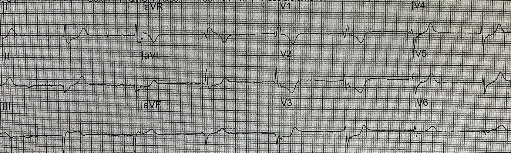
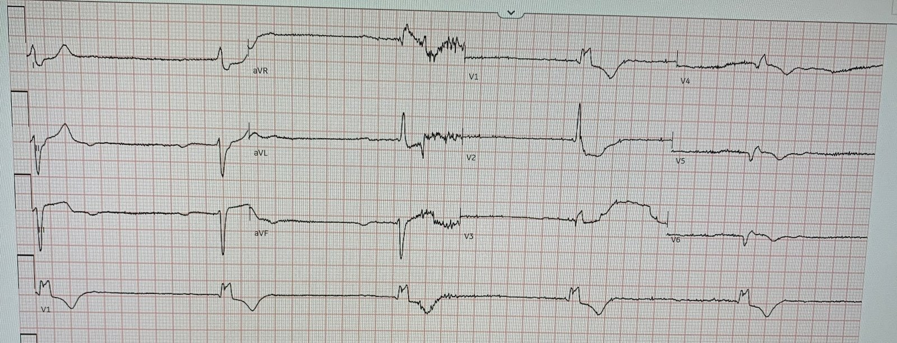
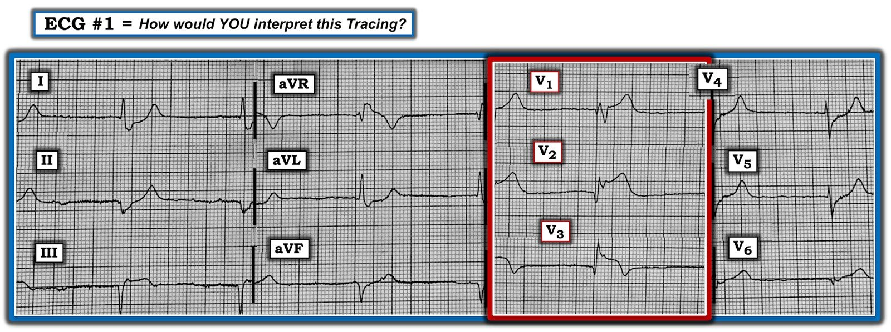
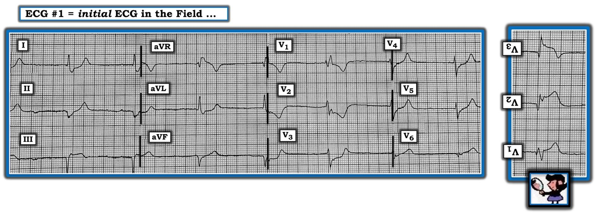

28/09/2020 — “Không phải STEMI”, nên phòng thông tim lại từ chối (một lần nữa). Họ có đúng không?
Bản dịch tiếng Việt của bài "“It isn’t a STEMI,” so cath lab refusal (again). Were they right?" – Dr. Smith’s ECG Blog. Giữ nguyên toàn bộ 6 hình ảnh của bản gốc.
Gửi bởi một người ẩn danh, Pendell Meyers viết bài
Một bệnh nhân nữ cao tuổi gọi đội cấp cứu ngoài viện (EMS) vì đau thượng vị cấp. EMS đến nơi và ghi điện tâm đồ này trên đường đến bệnh viện:


Ca này được gửi cho tôi chỉ kèm các chi tiết trên, và tôi đã trả lời:
“Đây là OMI sau-bên (và có lẽ cả thành dưới) cho đến khi chứng minh được điều ngược lại. Tôi cũng sẽ cho một ít calci vì nhịp chậm, QRS rộng, và vài chuyển đạo có sóng T gần như nhọn. Nhưng tôi không thực sự nghĩ đây là tăng kali máu. Ca này là OMI. Hoặc LCX, hoặc RCA, hoặc có thể là một nhánh bờ tù (Obtuse Marginal) cấp máu cho các vùng đó.”
Diễn giải: Không có hoạt động xoang, kể cả không có sóng P ngược dòng. Nhịp có lẽ là nhịp thoát bộ nối với tần số khoảng 45, kèm RBBB và nhiều khả năng cả LAFB (vì trục lệch trái dù có RBBB). Một khả năng khác là nhịp thoát phân nhánh sau. Có ST chênh xuống (STD) ở V2-V5, rõ nhất ở V2 và V3. STD này ngược hướng quá mức ở V2, và đồng hướng ở V3. Các chuyển đạo thành dưới có sóng Q kèm ST chênh lên (STE) ở chuyển đạo III, và có một chút STD soi gương ở I và aVL. Điều thú vị là nhiều sóng T trông hơi nhọn. Cùng với nhịp chậm và blốc dẫn truyền, điều này sẽ là dấu hiệu báo động về khả năng tăng kali máu, mà tất nhiên cũng có thể gây ra hình ảnh giả OMI. Chúng tôi đã trình bày trên blog này nhiều ca có vẻ có cả OMI lẫn tăng kali máu nặng.
Ngoài ra, có cả 1) không có hoạt động xoang tự phát (ngưng xoang hoặc nhịp chậm xoang cực độ) và 2) không có hoạt động ngược dòng, điều này hàm ý có cả blốc AV
Khoa tim mạch được mời ngay đến giường bệnh nhưng họ cho rằng điện tâm đồ này “không phải STEMI” và từ chối đưa bệnh nhân vào phòng thông tim.
Troponin T lần đầu trả về tăng rất cao, 4.04 ng/mL. Kali là 4.1 mEq/L. Khoa tim mạch được gọi lại đến giường bệnh để đánh giá lại.
Bình luận của Smith: Khi Pendell nhắn ca này cho tôi, tôi nghĩ đây vừa là tăng kali máu vừa là OMI thành dưới-sau. Đặc biệt V4 và V5 có hình dạng của tăng kali máu. Điều này một lần nữa cho thấy luôn luôn có dương tính giả và âm tính giả.
Một điện tâm đồ khác được ghi:


Làm sao chúng ta biết? Chúng ta nhận ra điều này nhờ biên độ QRS rất thấp và các sóng Q. ST chênh lên nhẹ có giá trị chẩn đoán STEMI thành sau, vì ở chuyển đạo phía sau chỉ cần 0.5 mm ở chỉ một chuyển đạo là đạt “tiêu chuẩn”. Có thể có sóng nhĩ nhưng không thể khẳng định với điện tâm đồ chất lượng thấp này. Nếu các sóng nhĩ nghi ngờ đó là thật, đây có thể là nhịp chậm xoang kèm blốc AV 2:1. Nếu không, đây sẽ là blốc tim hoàn toàn với nhịp thoát bộ nối. Tần số khoảng 30 lần/phút. Có vẻ như bệnh nhân vẫn tỉnh táo, nhận thức tốt và huyết áp bình thường với nhịp này, và lúc đó không cần tạo nhịp.
Chúng tôi không khuyến cáo dùng chuyển đạo phía sau trong tình huống này vì chúng không cần thiết (điện tâm đồ ban đầu đã đủ chẩn đoán nhồi máu cơ tim thành sau) nhưng chúng có thể âm tính giả và khiến bạn từ bỏ chẩn đoán của mình.
Vì sao chuyển đạo phía sau lại âm tính giả? Có 2 lý do:
1) chúng thường được ghi vào thời điểm muộn hơn, sau khi động mạch đã tái tưới máu. Điều này dễ nhận ra nếu bạn để ý: V1-V3 vẫn được ghi và nhìn thấy, và ST chênh xuống ở các chuyển đạo này sẽ không còn nữa.
2) điện thế của chuyển đạo phía sau có thể rất nhỏ vì tín hiệu phải đi xuyên qua phổi.
Kết cục
Bệnh nhân được đưa vào phòng thông tim, phát hiện tắc LCX 100% (TIMI 0) và được đặt stent. Không chỉ định thêm xét nghiệm troponin nào nữa.
Tính đến nay bệnh nhân vẫn sống.
Những điểm cần học:
RBBB nên có một mức ST chênh xuống và sóng T đảo ngược nhỏ, tương xứng, ngược hướng phù hợp ở các chuyển đạo có sóng R’ lớn (thường chỉ V1 và V2). Đến một mức nào đó, ST chênh xuống ở các chuyển đạo này trở nên không tương xứng. Ca này là một ví dụ tuyệt vời về ST chênh xuống ngược hướng quá mức trong RBBB, rõ nhất ở V2-V4, biểu thị OMI thành sau trên nền RBBB.
Hãy luôn giữ tăng kali máu trong chẩn đoán phân biệt ở bất kỳ bệnh nhân nặng nào có nhịp chậm, QRS rộng, blốc AV và hình dạng kỳ dị. Lẽ ra sẽ là một lựa chọn tuyệt vời nếu cho bệnh nhân này calci tĩnh mạch ngay khi đến để xem điện tâm đồ có đáp ứng không, đồng thời vẫn điều trị OMI.

===================================
BÌNH LUẬN CỦA TÔI, bởi KEN GRAUER, MD (28/9/2020):
===================================
Dr. Meyers đã diễn giải điện tâm đồ lúc nhập viện của ca này một cách xuất sắc!
- Như Dr. Meyers đã nêu — sự kết hợp của QRS giãn rộng + nhịp chậm + không có sóng P xoang phải gợi ý ngay khả năng tăng kali máu — nhất là khi sóng T ở không dưới 8/12 chuyển đạo (tức là ở các chuyển đạo I,II,aVL,aVF; và từ V3 đến V6) trên điện tâm đồ ban đầu trông nhọn hơn mức bình thường lẽ ra phải có. Vì lý do này — Dr. Meyers đã đề xuất một cách xác đáng rằng cho calci theo kinh nghiệm là một lựa chọn hợp lý trong hoàn cảnh này, ngay cả trước khi biết nồng độ K+ huyết thanh.
- LƯU Ý — Tôi dám cá rằng Không Ai thường xuyên theo dõi Dr. Smith’s ECG Blog lại gặp khó khăn trong việc nhận ra tăng kali máu khi có đủ mọi dấu hiệu điển hình. Dù vậy, nhiều bệnh nhân của chúng ta đơn giản là “không đọc sách giáo khoa” — và việc nhận ra tăng kali máu trở nên khó hơn nhiều khi sóng T nhọn không rõ ràng (tức là khi sóng T không quá nhọn với đáy hẹp như vậy — hoặc, khi có các bất thường khác như RBBB). Vì lý do này — tôi nghĩ đáng để ôn lại một số cách biểu hiện ít được chú ý của tăng kali máu.
Về Tăng kali máu & Các nhịp chậm: Chúng tôi đã nhiều lần bàn luận trên Dr. Smith’s ECG Blog về nhiều biểu hiện điện tâm đồ của các mức độ tăng kali máu khác nhau. Trong số đó:
- Ôn lại các thay đổi điện tâm đồ tuần tự của tăng kali máu — trong Bình luận của tôi ở cuối bài ngày 26 tháng Một năm 2020.
- Và, liên quan đến nhịp chậm và không có sóng P trên bản ghi hôm nay — phần tôi ôn lại cơ chế của các thay đổi điện tâm đồ khác nhau (Bình luận của tôi trong bài ngày 3 tháng Bảy năm 2020) — mà tôi nhắc lại ở đây: Sóng T nhọn đặc trưng của tăng kali máu xuất hiện sớm trong quá trình — do nồng độ K+ tăng làm tăng tốc pha tái cực cuối. Khi K+ tăng nặng hơn — có sự ức chế dẫn truyền giữa các tế bào tim kế cận, cuối cùng ức chế dẫn truyền nút SA và nút AV. Điều này có thể dẫn đến một loạt rối loạn dẫn truyền, bao gồm kéo dài PR và khoảng QRS — chuyển dịch trục mặt phẳng trán — blốc phân nhánh và/hoặc blốc nhánh (kể cả chậm dẫn truyền trong thất) — và/hoặc blốc AV kèm các nhát và nhịp thoát. Cuối cùng, QRS giãn rộng có thể dẫn đến hình ảnh sóng hình sin (QRS giãn rộng hòa lẫn với sóng ST-T — đến mức không còn phân biệt được hai thành phần). Nếu tăng kali máu nặng này không được điều trị — VT, rung thất (VFib) hoặc vô tâm thu nhiều khả năng sẽ là biến cố cuối cùng.
- Khi K+ huyết thanh tăng — biên độ sóng P giảm. Cuối cùng, sóng P có thể biến mất. Đó là vì tế bào cơ nhĩ cực kỳ nhạy cảm với tác động ngoại bào của tăng kali máu (nhạy hơn nhiều so với nút SA, nút AV, bó His và các thất). Kết quả là — dù không có co bóp nhĩ (tức là mất sóng P trên điện tâm đồ) — vẫn có thể có sự dẫn truyền tín hiệu điện từ nút SA qua hệ thống dẫn truyền xuống các thất. Vì vậy, thay vì nhịp bộ nối hay nhịp thoát phân nhánh — một nhịp chậm không thấy sóng P trong tăng kali máu nặng có thể là Nhịp Xoang–Thất (sinoventricular; trong đó dù không có sóng P trên điện tâm đồ — nhịp VẪN được khởi phát từ nút SA, với tín hiệu điện truyền xuyên tới các thất). Nhưng vì sóng P biến mất và QRS thường rộng trong nhịp xoang-thất do tăng kali máu — nên RẤT DỄ nhầm nhịp này hoặc là AIVR (nhịp tự thất gia tốc — Accelerated IdioVentricular Rhythm) hoặc là VT.
- ĐIỀU CỐT LÕI: Nhịp chậm, hoạt động sóng P bị biến đổi và các dạng QRS giãn rộng khác nhau có thể tạo ra nhiều biểu hiện điện tâm đồ khi có tăng kali máu nặng. Cách duy nhất để không bỏ sót chẩn đoán ở một số bệnh nhân này — là luôn luôn nghĩ đến khả năng tăng kali máu mỗi khi gặp một bản ghi như bản ghi trong ca hôm nay.
— NHƯNG — K+ huyết thanh trong ca này hóa ra lại bình thường! Vì vậy — hình dạng sóng ST-T trong ca hôm nay không phải là hậu quả của tăng kali máu.
CÂU HỎI: Nếu tôi cho bạn xem điện tâm đồ trong Hình 1 — Bạn có chút nghi ngờ nào rằng đây là STEMI cấp không?
- GỢI Ý: Câu trả lời là “Không”.


Hình 1: BẠN sẽ diễn giải bản ghi này thế nào?
SUY NGHĨ CỦA TÔI về điện tâm đồ #1: Trong bối cảnh ST chênh lên kiểu STEMI cấp rõ ràng ở các chuyển đạo V1, V2 và V3 của Hình 1 — các dấu hiệu điện tâm đồ hỗ trợ mà chúng ta thấy ở các chuyển đạo khác phải trở nên rõ ràng không thể nhầm lẫn:
- Có ST chênh lên chắc chắn ở chuyển đạo III — kèm ST chênh xuống soi gương ở các chuyển đạo bên cao I và aVL. Các chuyển đạo bên cao này cũng biểu hiện phần cuối sóng T dương với biên độ cao đáng ngạc nhiên, trông đáng ngờ.
- Sóng T ở chuyển đạo II rõ ràng là tối cấp (“đầy đặn” hơn nhiều so với mức lẽ ra phải có, xét theo độ sâu vừa phải của sóng S ở chuyển đạo này).
- Trong bối cảnh này — sóng T ở chuyển đạo aVF có lẽ cũng tối cấp (xét theo độ sâu nhỏ của sóng S ở chuyển đạo này).
- Cả 3 chuyển đạo ngực bên (các chuyển đạo V4,5,6) đều biểu hiện rõ sóng T tối cấp xét theo biên độ QRS vừa phải của các phức bộ ở mỗi chuyển đạo này. Ngoài ra, các đoạn ST dẫn lên những sóng T tối cấp này đều bất thường (chênh xuống ở V4; thẳng đuỗn ở V5; và thẳng đuỗn với đoạn khởi đầu đi lên ở V6).
BÌNH LUẬN: Mặc dù có các bất thường rõ ràng đã mô tả ở trên ở 11/12 chuyển đạo (thực ra là ở cả 12 chuyển đạo nếu tính cả ST chênh lên ở aVR) — ở bệnh nhân cao tuổi này với triệu chứng mới khởi phát có thể là “tương đương” đau ngực — ca này lại thêm một lần nữa cho thấy đội tim mạch tuyên bố “Không phải STEMI — vì vậy KHÔNG có chỉ định thông tim cấp.” Tôi phải thừa nhận rằng tôi thực sự không hiểu nổi sự từ chối này … (Chúng tôi đã đăng nhiều ví dụ tương tự về kiểu bỏ sót này — gần đây nhất là trong bài ngày 21 tháng Chín năm 2020 của chúng tôi).
THÚ NHẬN: Bản ghi 12 chuyển đạo tôi đưa ra ở trên trong Hình 1 đã bị tôi chỉnh sửa. Tôi chỉ đơn giản lật ngược 3 chuyển đạo nằm trong hình chữ nhật ĐỎ (để thể hiện hình soi gương của các chuyển đạo V1, V2 và V3).
- Tôi đưa điện tâm đồ ban đầu thật của ca hôm nay trong Hình 2 — trong đó tôi đã thêm hình lật ngược (hình soi gương) của các chuyển đạo V1, V2 và V3 ở bên phải điện tâm đồ #1.
- Như tôi đã mô tả trong nhiều bài trước trên Dr. Smith’s ECG Blog (Xem đặc biệt Bình luận của tôi trong bài ngày 21 tháng Chín năm 2020) — Nghiệm pháp soi gương (Mirror Test) không gì hơn là một công cụ hỗ trợ thị giác đơn giản giúp lật ngược các chuyển đạo trước, nhờ đó dễ nhận ra hình dạng của nhồi máu cơ tim thành sau cấp. Nghiệm pháp dựa trên nguyên lý rằng hình soi gương của các chuyển đạo trước cho biết hình dạng của hoạt động điện đang diễn ra ở thành sau. Với một chút luyện tập — bạn sẽ thấy hiếm khi (nếu có) cần đến chuyển đạo phía sau — vì sử dụng nghiệm pháp soi gương cho phép nhận ra ngay lập tức hầu như mọi trường hợp có nhồi máu cơ tim thành sau cấp.
- LƯU Ý: Dù bạn gọi hình dạng ST-T ở các chuyển đạo trước của điện tâm đồ #1 (trong Hình 2) là “tương đương STEMI” (vì về mặt kỹ thuật không có ST “chênh lên” ) hay đơn giản là OMI — thì hình ảnh này ở một bệnh nhân có triệu chứng mới xuất hiện xác định một cách đáng tin cậy nhồi máu cơ tim cấp do tắc mạch (Occlusion-based MI).
- NHỮNG ĐIỂM CUỐI CÙNG: Hình dạng của sóng ST-T ở các chuyển đạo V2 và V3 của điện tâm đồ #1 trong Hình 2 rõ ràng là bất thường! Hãy chú ý điểm J chênh xuống nhiều đến mức nào ở đoạn ST của chuyển đạo V2. Điều này không gặp trong RBBB đơn thuần. Điểm J chênh xuống 2 mm kèm đoạn ST thẳng đuỗn dạng bậc thềm ở chuyển đạo V3 cũng không phải là “biểu hiện đi kèm bình thường” của RBBB đơn thuần. Một mức chênh xuống ST-T nhất định là điều được dự đoán trong RBBB không biến chứng — nhưng nhìn chung mức này phải rõ nhất ở chuyển đạo V1 (và không tăng dần khi chúng ta đi sang bên về phía các chuyển đạo V2, V3, như chúng ta thấy trong Hình 2).


Hình 2: Điện tâm đồ ban đầu của ca này, với hình soi gương của các chuyển đạo V1, V2 và V3 đặt ở bên phải điện tâm đồ #1 (Xem phần bài viết).